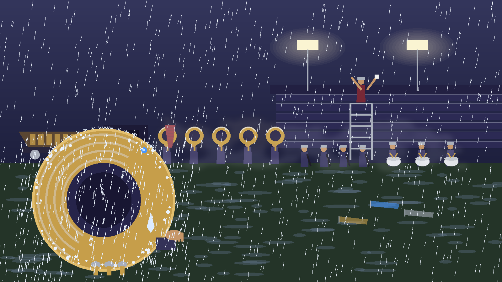
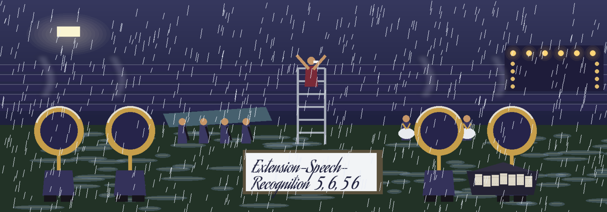
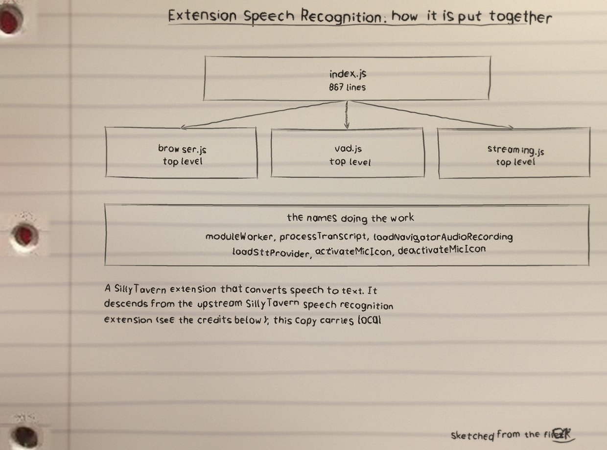
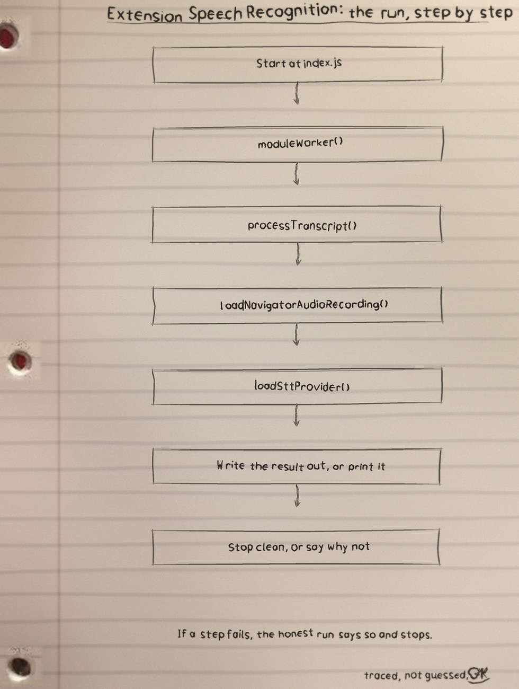
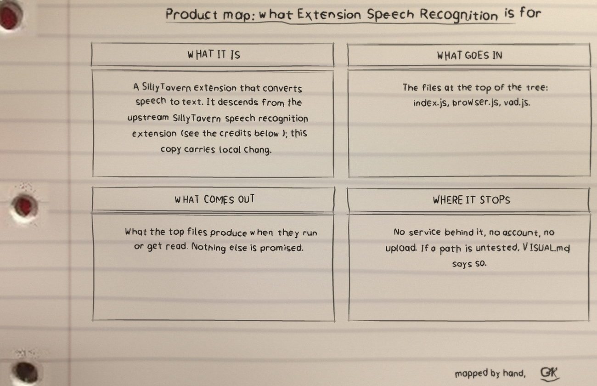

stubgithub.com/Epsilon0xCell/Extension-Speech-Recognition
A SillyTavern extension that converts speech to text. It descends from the upstream SillyTavern speech recognition extension (see the credits below); this copy carries local changes to the Browser provider, described under Local changes.
Documentation: stubdocs.sillytavern.app

Extension Speech Recognition: 16 files, 2198 counted lines across JavaScript 2124, Markdown 56, JSON 15. One job, done in the open, in files you can read.
index.js carries the most lines. If the project grows, that file is where the growth lands first, for better or worse.
All JavaScript files pass a Node module parse check, and the Browser provider is covered by 11 Node tests. Live transcription was not exercised: no running SillyTavern instance or real microphone was available. The full entry is under Verification below.
The Web Speech API (SpeechRecognition / webkitSpeechRecognition) in Chromium based browsers, no server needed.
Whisper (OpenAI), Whisper (Extras), and Whisper (Local): microphone audio is recorded in the browser and sent to the configured transcription backend.
Recorded in the browser and sent to the configured backend, like the Whisper chairs.
Continuous transcription through a streaming backend, with optional trigger words and message mapping.
Message modes (append, replace, and auto send), message mapping, push to talk, and voice activation are configured in the same settings panel where the provider is selected.
The Browser provider in this copy differs from upstream:
onstart) no longer cancel each other out.The repo README has the exact commands for this one. The shape is the shape for most of my projects: clone it, read the top file first so you know what will happen, then run it on something you do not mind breaking.
$ git clone https://github.com/Epsilon0xCell/Extension-Speech-Recognition.git
$ cd Extension-Speech-Recognition
From index.js, line 44 on. I did not tidy it for the page. What you see is what the file has.
let mediaRecorder = null;
async function moduleWorker() {
if (sttProviderName != 'Streaming') {
return;
}
// API is busy
if (inApiCall) {
return;
}
try {
inApiCall = true;
const userMessageOriginal = await sttProvider.getUserMessage();
let userMessageFormatted = userMessageOriginal.trim();
if (userMessageFormatted.length > 0) {
console.debug(DEBUG_PREFIX + 'recorded transcript: "' + userMessageFormatted + '"');
let userMessageLower = userMessageFormatted.toLowerCase();
// remove punctuation| File | Lines |
|---|---|
index.js | 867 |
browser.js | 410 |
vad.js | 250 |
streaming.js | 122 |
wave-worker.js | 95 |
whisper-local.js | 89 |
Names doing the work: moduleWorker, processTranscript, loadNavigatorAudioRecording, loadSttProvider, activateMicIcon, deactivateMicIcon, stopCurrentProvider, onSttLanguageChange.
All JavaScript files pass a Node module parse check. The Browser provider is covered by a persistent Node test suite in test/ (11 tests) that runs browser.js and the mic icon helpers from index.js against a stub SillyTavern host: settings loading and defaults, heartbeat cleanup on reload and on provider cleanup, the voice activation transcript paths, manual click sessions, error handling, and the transcript shaping helpers. Run it with Node 20 or newer:
node --test test/browser-provider.test.mjs
A running SillyTavern instance and a real microphone were not available in the test environment, so live transcription itself was not exercised.
I sketch my projects on notebook paper so I have to understand them well enough to draw them. The full set, with the counts and how they were counted, is the stubExtension-Speech-Recognition-Visuals folder in the repo. Nothing is drawn over the binder holes. That is a rule, not a style.


